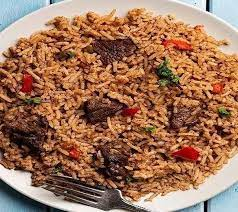
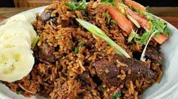
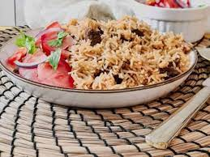
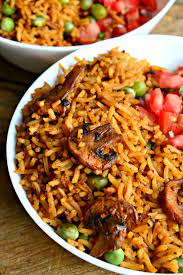
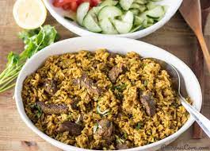
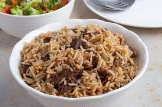

About
East African Pilau is a traditional, beautiful fragrant rice dish made with many aromatic spices that adds an amazing depth of flavor to the rice.
It can be made with either beef or chicken
Pilau has a wonderful balance of flavors. It is a festive dish, which is never missing during special occasions or events. It’s made with rice cooked in a well-seasoned broth of Meat or chicken. Unlike the Indian pilau, the East African version does not use curry and it’s less spicy.
Rice is, without a doubt, one of my favorite food in the world. Not only is it my to-go dish when I need to prepare a quick meal, but it can easily be turned into an elegant dish for special occasions.


Ingredients
| Rice Pilau | Pilau Masala- Pilau Spices |
|---|---|
|
|
Preparation
Pilau Masala Preparation
- Place the cumin, coriander, black peppers, cinnamon, cardamom and cloves in a dry pan
- Roast over low heat until warmed through and fragrant and blend (I used a coffee grinder) until smooth.
- You need just 1 to 11/2 tablespoons for this recipe (depending on how fragrant you want the rice to be). Feel free to store the leftover spice powder in an airtight container for up to 3 months, or refrigerate for up to 6 months.
Rice Pilau Preparation
- Heat a stockpot on medium-high heat. Add oil and heat until hot but not smoking.
- Add the sliced onions and fry for 10-15 minutes or till the onions starts to turn golden brown (be careful not to burn it).
- Add the garlic, ginger, serrano pepper, Cook for 1-2 minutes, until fragrant.
- Add the cubed beef, pilau masala, beef stock cubes, bay leaves, cilantro, and salt to taste. Cook until the meat browns and caramelizes stirring occasionally about 8 to 10 minutes.
- Add the diced tomatoes and cook for 4-5 minutes, until the tomatoes have released their liquid.
- Stir in the potatoes and the water. Bring to a boil and cook for 10 minutes.
- Stir in the rice, and cover tightly with a foil paper (to keep the steam in) if necessary. Reduce the heat to low and cook for 20 minutes, until the rice is cooked and the liquid is absorbed
- Once the rice is dry, remove the foil paper and fluff with a fork to ensure the seasonings are well distributed all around the rice.
- Serve hot with fresh Kachumbari salsa. Enjoy!
Gallery





